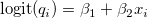
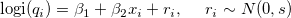
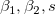
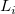
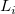
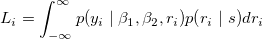

| データ解析のための統計モデリング入門 |
| データ解析のための統計モデリング入門 |
データにばらつきをもたらす個体間の差異は、全てをデータとして定量化することはできない1。
人間が測定できない、or しなかった個体差を組み込んだGLMであり、複数の確率分布を部品とする統計モデル。
 : 観測個体番号
: 観測個体番号
 : 観察種子数（全個体統一）
: 観察種子数（全個体統一）
 : 生存種子数
: 生存種子数
 : 葉の数
: 葉の数
をもとに、
|  | (7.28) | ||
 |
(7.29) |
なるモデルを考える。
 はたして妥当か？
はたして妥当か？
全ての個体を（観測されていない説明変数については全て）均質と考え、どの個体の生存種子数についても同じ二項分布で説明できると仮定してモデルを当てはめると、データのばらつきはモデルから予測されたものよりも大きくなる。
観測されていない個体差として、
生物的（個体差）
非生物的（場所差）
な要因によるものが挙げられる。
すべて観測することが不可能であるなら、個体差や場所差を原因不明のまま統計モデルに取り込む必要がある。
|  | (7.30) |
式(7.30) で最尤推定できるのは、 の3つ。  については、個体ごとの尤度  において積分消去してしまう。
については、個体ごとの尤度  において積分消去してしまう。
|  | (7.31) |
これは、モデル分布である二項分布と、個体差を表す正規分布とを混合していることに相当する。
かつては準尤度（quasi likelihood）を用いていたが、現在では利用する利点がないので使われていない。
GLMMの考え方が必要になるかを決めるポイント
同じ個体・場所などから何度もサンプリングしているか
個体差や場所差が識別できてしまうようなデータの取り方をしているか
各個体や場所からひとつだけのデータを取る。
{A校のBさんから1回、C校のDさんから1回、E校のFさんから1回、...}
同じ個体や場所から複数のデータを取る。
{A校からBさん、Cさん、Dさん、... } {E校からFさん、Gさん、Hさん、...}
擬似反復の場合には個体差が推定可能であり、かつその影響を考慮しなければ推定結果に偏りが生じる。
Footnotes
| データ解析のための統計モデリング入門 |